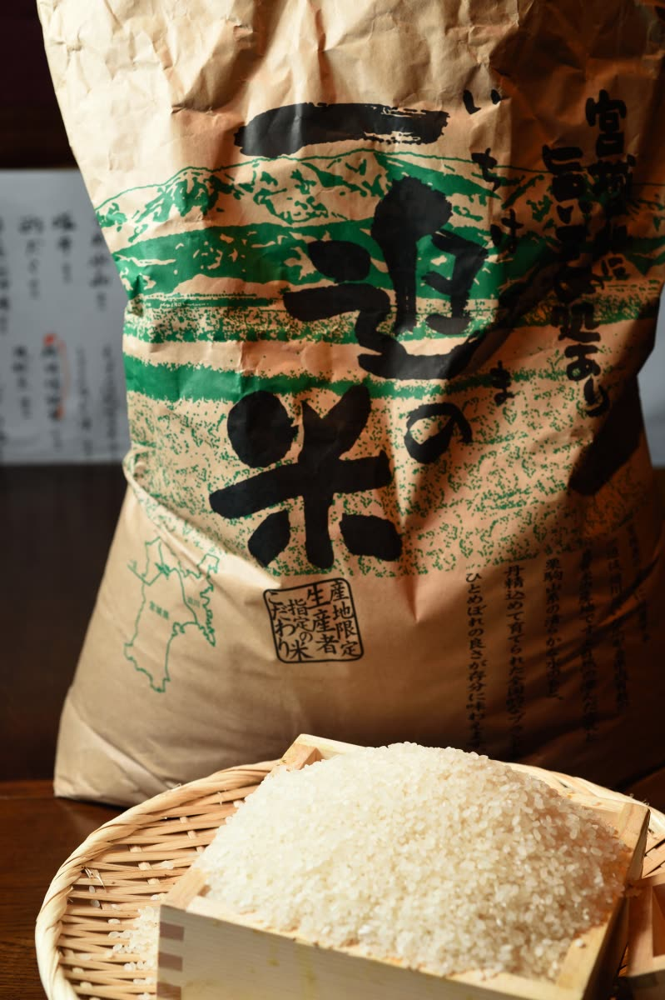
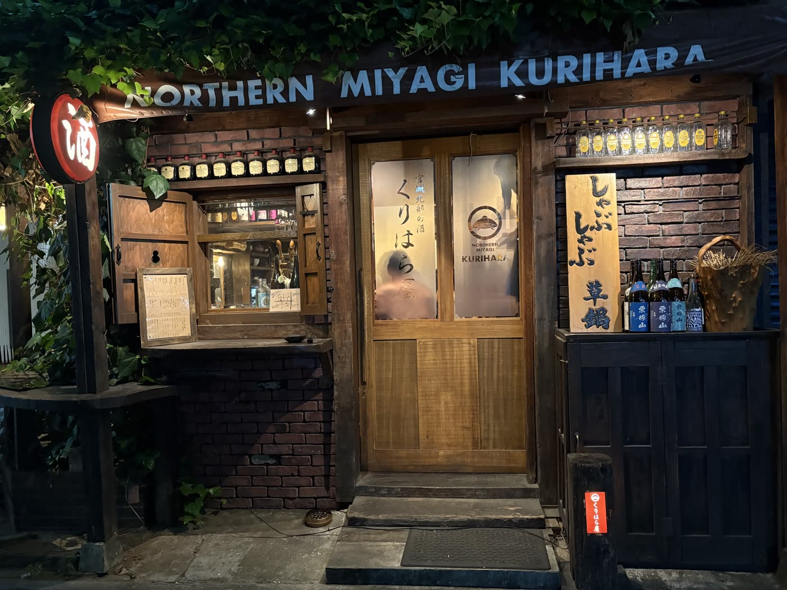

株式会社けいか堂飲料店Kadoya Group / Yushima, Tokyo
株式会社けいか堂飲料店Kadoya Group / Yushima, Tokyo
ENGLISH
湯島天神下の酒場４店舗｜全店 18:00〜深夜・日曜定休
03-3831-4775（バーカドヤ）
 株式会社けいか堂飲料店Kadoya Group / Yushima, Tokyo
株式会社けいか堂飲料店Kadoya Group / Yushima, Tokyo
宮城県の特選素材を
皆様にお届けしたい……
弊社代表 村山の地元 宮城県に対する想いが「くりはら屋」へ注がれています。皆様に宮城県の特選素材を余すところなく召し上がっていただきたいと思っております。
特に宮城県北部「栗原」のお米を味わってみてください。他にも数々の地酒・自慢の料理をご用意して、皆様をお待ちしております。是非、農家直送の滋味をお楽しみくださいませ。
生産者の方々の食材に対する熱い想いを、料理として皆様にお届け致します☆


宮城県の北西部、岩手・秋田との県境に広がる栗原市。栗駒山のふもとに田園が広がり、伊豆沼・内沼の水辺と、ブナの森に抱かれた米どころです。昼夜の寒暖差と栗駒山の伏流水が、粘りと甘みのあるお米を育てます。
米があるところに酒蔵あり。栗原には「栗駒山」の千田酒造、「萩の鶴」の萩野酒造、「綿屋」の金の井酒造と、小さくも個性の際立つ蔵が並びます。くりはら屋では、こうした栗原の酒と、同じ土地の米・野菜を一緒に味わっていただけます。



〒113-0034 東京都文京区湯島3-46-9 スギヤマビル1F・2F
TEL 03-3831-5256
18:00〜翌4:00（L.O. 3:00）／日曜定休
宮城県の県産品サイト「宮城旬鮮探訪」の「首都圏のゆかりの店」にも掲載されています。